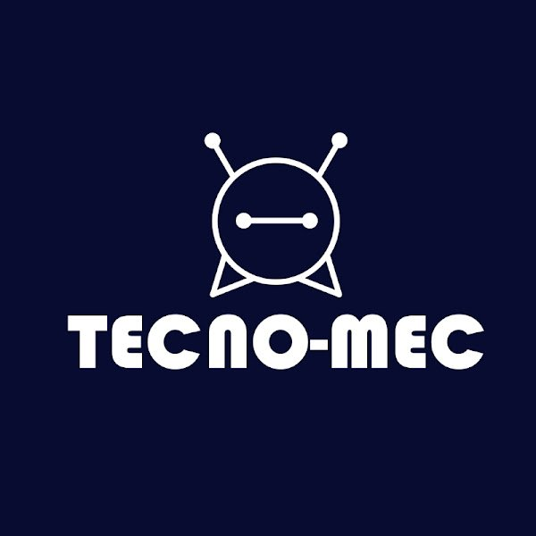
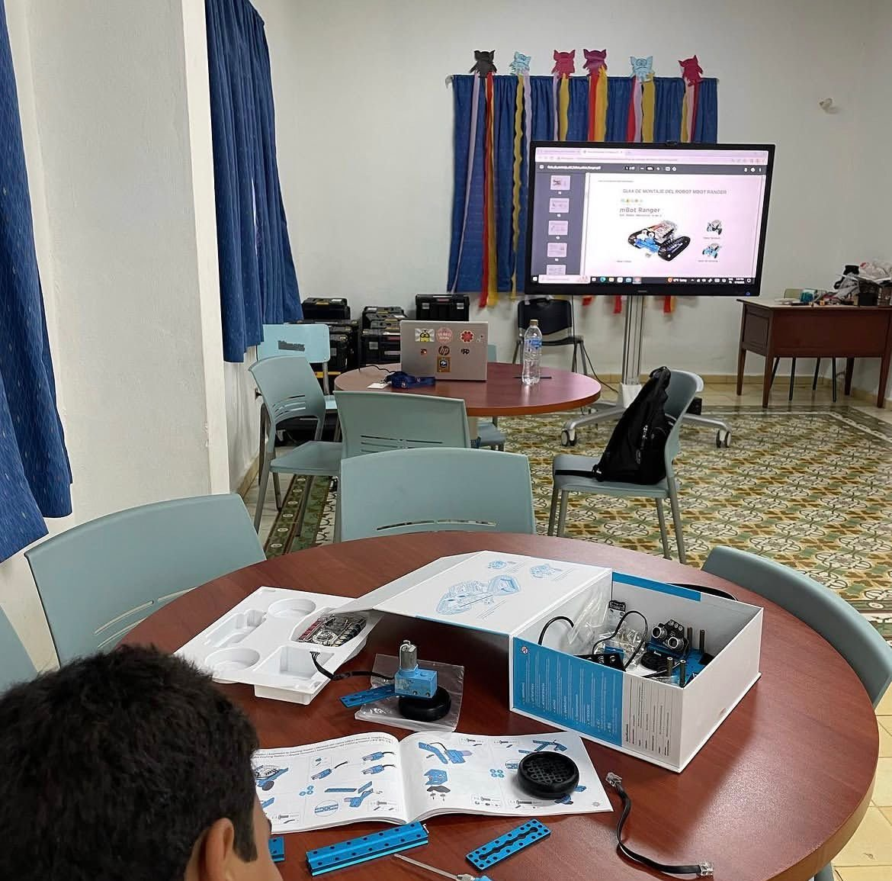
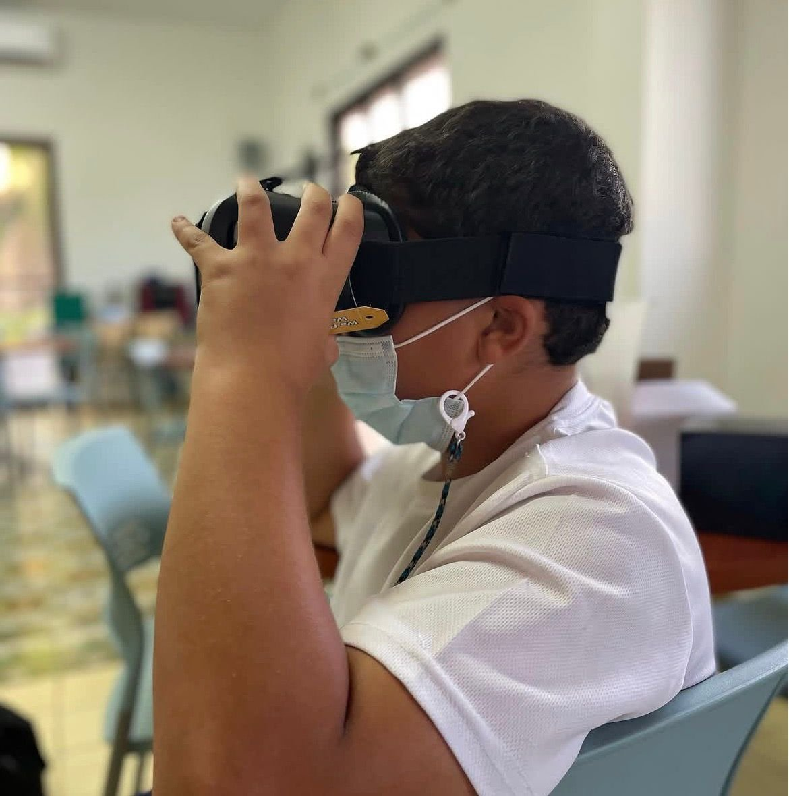
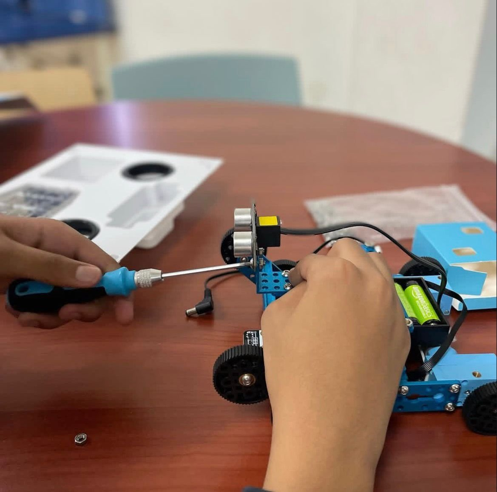
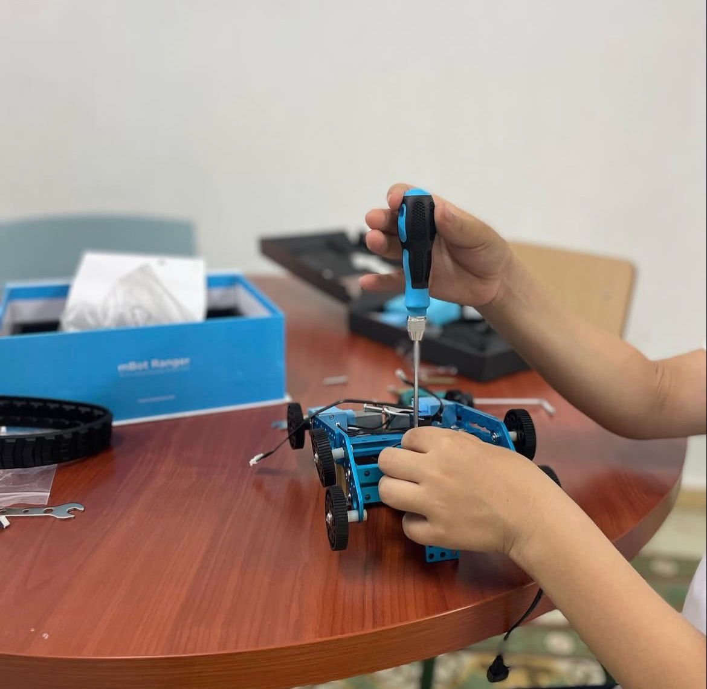
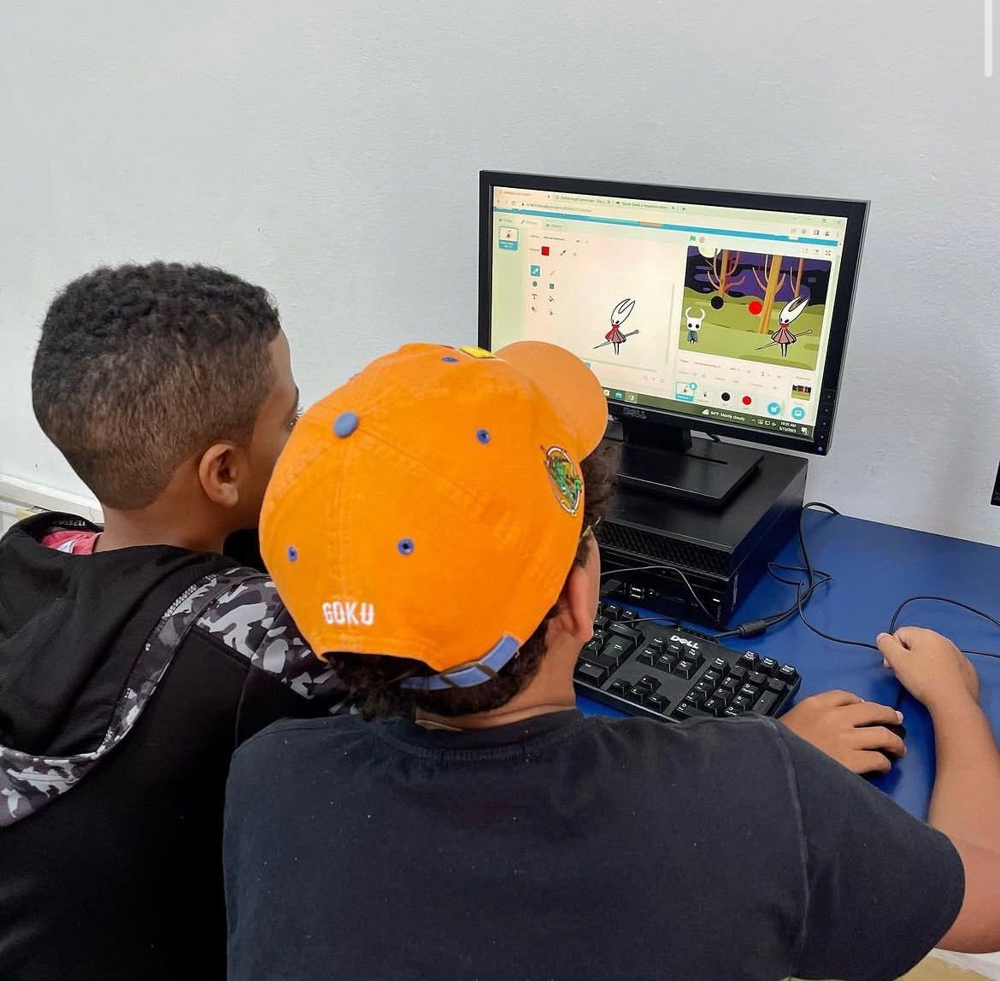

Tecno-Mec Academy was an educational robotics and technology program I founded in the Dominican Republic with a single goal: make engineering and technology accessible to children from an early age, through hands-on learning and real projects.
The slogan — "Tecnología para la vida" (Technology for life) — reflected the belief that technical skills are not just for engineers, but a foundation for problem-solving in any field.
Every session was project-based. Students built something tangible by the end of each class. I designed all curricula from scratch, adapting complexity to different age groups while keeping one principle consistent: learn by doing.
Running Tecno-Mec reinforced something fundamental: the ability to explain a complex system simply is just as valuable as building it. Teaching children to think like engineers — to break problems down, iterate, and not fear failure — shaped how I communicate technical ideas with non-technical stakeholders today.